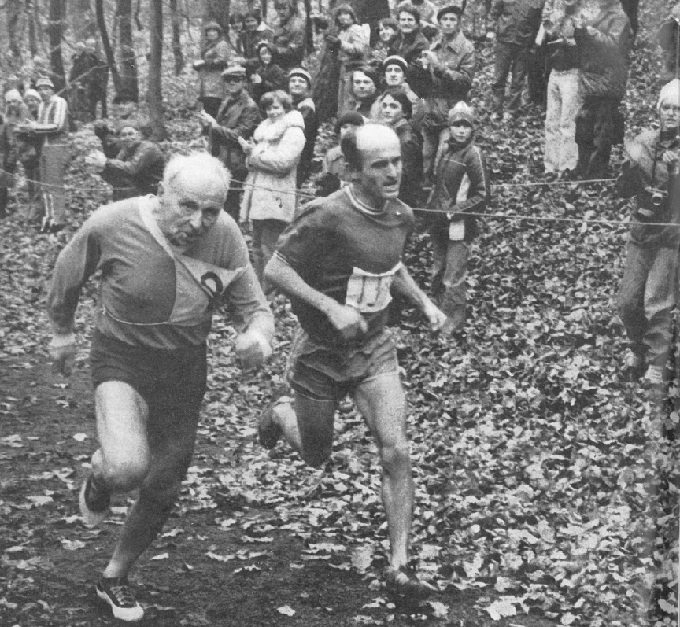
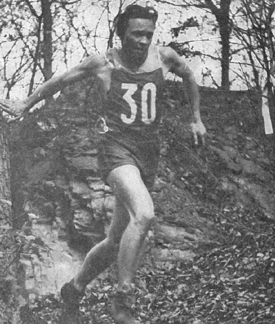
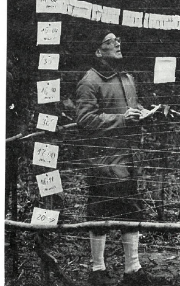
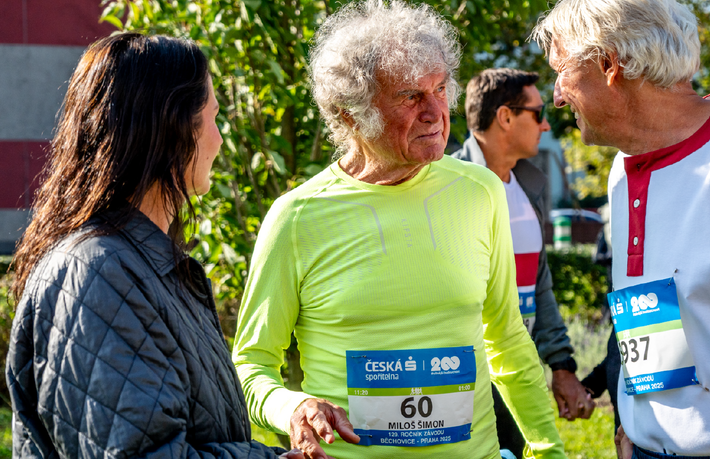
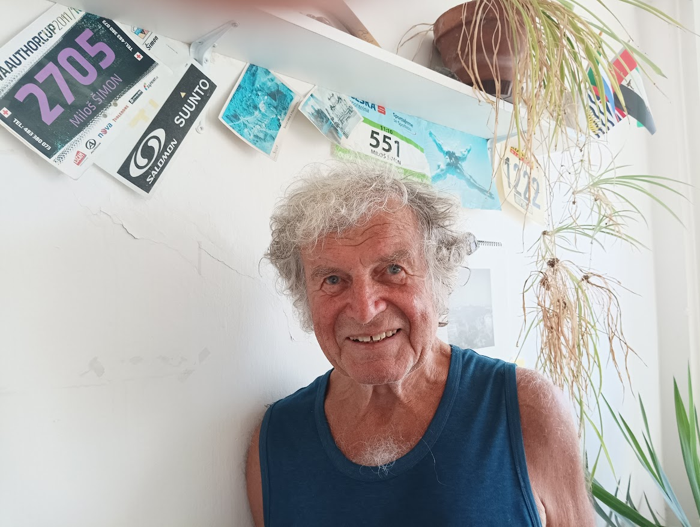
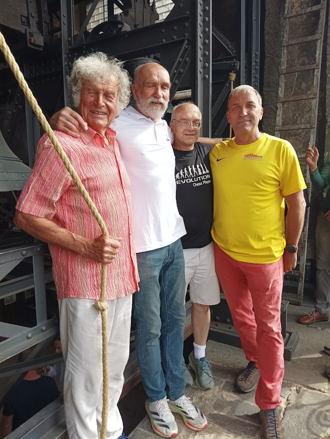
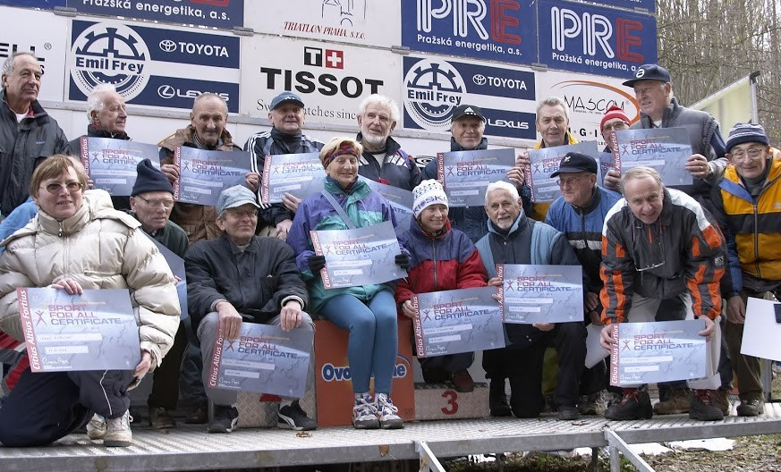

Veterán
Velké kunratické
Časopis určený veteránkám, veteránům a všem příznivcům legendárního závodu
Číslo 9 / listopad 2025

Legendy Velké kunratické. Tak se jmenuje seriál, který zahajujeme dnešním číslem a v kterém představíme slavné osobnosti z historie našeho závodu. Na snímku převzatém z ročenky k 50. VK (foto Petr Molt) se těsně před cílem setkali mnohonásobní vítězové a rekordmani Jaroslav Obešlo a Vlastimil Zwiefelhofer.
Legendy Velké kunratické (1)
Dnešním číslem zahajujeme seriál o významných osobnostech z více než devadesátileté historie Velké kunratické. O některých z nich jsme napsali ještě před vznikem seriálu v minulých číslech. Namátkou můžeme jmenovat devítinásobného vítěze a držitele traťového rekordu Vlastíka Zwiefelhofera, rekordmany v počtu účastí Josefa Vonáška a Slávku Ročňákovou, šedesátinásobného účastníka Ivana Šperlinga, dlouholetého ředitele Emila Pospíšila nebo veteránského rekordmana Miloše Smrčku. Do historie se zapsali mnozí další a někteří z nich jsou už současným mladým veteránům neznámí. Postupně vás s nimi seznámíme…
Trojice zakladatelů: Obešlo, Otáhal, Vondřejc
Obešlo, Otáhal, Vondřejc – trojice zakladatelů, která počátkem třicátých let 20. století objevila trať v Kunratickém lese a položila základ slavnému závodu. Postupem let se všichni tři stali legendami. Současní mladí veteráni je už nepamatují.
Jaroslav Obešlo – rekordman v počtu vítězství i v počtu startů
Jaroslav Obešlo (1913 – 1995) a Stanislav Otáhal (1913 – 2004) byli kamarádi, ale na trati VK velcí soupeři, kteří v prvním desetiletí závodu nesmiřitelně bojovali o nejvyšší příčky. Mírně navrch měl Obešlo, mezi kamarády zvaný Vobejda, který v závodě šestkrát zvítězil a k tomu přidal čtyři druhá místa. V roce 1943 vytvořil traťový rekord časem 13:10. Patřil k našim předním běžcům na středních tratích, v roce 1935 získal titul mistra republiky na 1500 metrů časem 4:04,6. Na trati Velké kunratické byl pověstný především svými kaskadérskými seběhy z Hrádku, podle pamětníků byl v této disciplíně nepřekonatelný. Připomeňme si, co napsal Evžen Rošický 16. listopadu 1937 v Haló novinách v reportáži o 4. ročníku závodu. „Letošní běh (už čtvrtý ročník) vyhrál Obešlo. Startoval dvacátý osmý a přiběhl do cíle sedmý. Ten má na Kunratické specialitu. Se stráně, s které ostatní opatrně lezou, chytajíce se stromů, Obešlo si to pustí přímo dolů. Míhá se kolem ostatních a vzbuzuje v nich jedno zlomyslné přání, aby upadl. Ale on ještě nikdy neupadl.“ (Celý článek Evžena Rošického si můžete vyhledat ve Veteránovi VK č. 4, ti starší také v ročence k 50. ročníku v roce 1983).
Do historie Velké kunratické se Jaroslav Obešlo zapsal nejen svými šesti prvenstvími, ale i mimořádnou věrností závodu, jehož byl spoluzakladatelem. Do roku 1987 si z dosavadních 54 ročníků zapsal 53 účastí, vynechal jedinkrát kvůli nemoci v roce 1939. Vyhrál i první dva ročníky veteránského dvojboje, předchůdce dnešního kombinovaného hodnocení věk/výkon. Při svém 50. startu dosáhl času 29:30,3, jeho poslední výkon v roce 1987 byl 37:11,3. Byl aktivním sportovcem i v pokročilém věku, kdy patřil mezi populární účastníky nejen Velké kunratické, ale i Jizerské padesátky a jiných závodů. Krásná fotografie na titulní straně tohoto čísla z počátku osmdesátých let symbolizuje předání žezla nejúspěšnějšího závodníka Vlastimilu Zwiefelhoferovi.
Stanislav Otáhal – mezi elitou až do veteránů
JUDr. Stanislav Otáhal ve Velké kunratické dosáhl, stejně jako Obešlo, deseti umístění mezi prvními třemi, prvenství ale slavil „jen“ dvakrát, na svého kamaráda mu téměř vždy nějaká vteřinka chyběla. Vynahradil si to v závodech na dráze, kde se, na rozdíl od svého souputníka, probojoval až na olympiádu. Bylo to v roce 1936, tehdy na OH v Berlíně startoval v běhu na 800 metrů. V tom roce v Kunraticích Obešla porazil, což se mu podařilo ještě v roce 1940. Nejlepšího času 13:26,6 dosáhl v roce 1944, kdy skončil za Obešlem druhý. Starty v Kunraticích sbíral pomaleji než Obešlo, počet jeho účastí se zastavil na i tak úctyhodném čísle 36. Naposled startoval ve slavném 50. ročníku v roce 1983, kdy ve svých 70 letech zaběhl skvělý čas 19:03. V současné době běžci s takovým výkonem zdaleka v Kunraticích nekončí. Staré účty s „Vobejdou“ si Otáhal vyřídil v kategorii veteránů. Nově založenou veteránskou kategorii v prvních dvou ročnících v letech 1968 a 1969 vyhrál, byť až po dodatečné úpravě výsledkové listiny, kdy z ní byli vyřazeni závodníci s tzv. čestnými starty, kteří neměli splněnou základní podmínku dvaceti absolvovaných startů. Kombinované hodnocení veteránů vyhrál čtyřikrát. Věřím, že vás zaujme, co napsal Stanislav Otáhal o zrodu a historii Velké kunratické do roku 1972.
Kunratický les byl doménou běžců Vysokoškolského sportu Praha, kteří v třicátých letech chodili běhat zpravidla na jaře a na podzim. Byli to nejen běžci středních a dlouhých tratí (Hron, Bloman, Obešlo, Otáhal, Vondřejc atd.), ale i sprinteři (Kněnický, Schwär, Hanč, Preusz atd.).
Nejčastějšími návštěvníky Kunratického lesa byla trojice Obešlo Jaroslav, Vondřejc Jan a Otáhal Stanislav, tehdy studenti a běžci středních tratí. Tito tři studenti přišli v roce 1934 na myšlenku založit v Krčském lese běh – závod, který by se vymykal normálním lesním běhům, který by byl zpestřen přírodními překážkami a kterého by se mohli zúčastnit nejen běžci, ale i závodníci v jiných atletických disciplínách a závodníci v jiných druzích sportu, funkcionáři atd. Měl to být čistě klubový závod, který vedle sportovního efektu měl býti společenskou událostí sloužící k přátelskému pobavení na zakončení atletické sezony.
Dlouho oni tři prospektoři vybírali trať tohoto originálního závodu. Použili k tomu i podrobný plán Kunratického lesa, podle něhož našli napojení třetím kopcem na dlouhý průsek vedoucí k tzv. „účku“. S tou myšlenkou přišli do „Strakovky“, tehdy sídla VS Praha, kde byli s nadšením přijati. Jelikož trať nebyla nijak lehká, ba spíše nebezpečná, zvolil se nejpozdější termín v sezoně – druhá neděle v listopadu, týden po tradičním Běhu Stromovkou. Hned se maloval plakát a šlo se na to. Oni tři vynálezci trať v sobotu, den před závodem, ještě s dalšími „Strakováky“ vyznačkovali a druhou neděli v listopadu 1934 se uskutečnil první ročník závodu.
Bylo dohodnuto startovat jednotlivě po 10 vteřinách, a to v různých kategoriích (sprinteři, vytrvalci, vrhači, cyklisté, příchozí atd.). Poprvé startovalo 21 závodníků. Tenkráte nikoho nenapadlo, že by se z tohoto klubového závodu mohl státi masový běh takového rozsahu jako dnes. Původně byl závod hlášen jako Lesní běh Vysokoškolského sportu Praha. Ve druhém ročníku Karel Kněnický navrhl název Velká kunratická, který byl spontánně přijat.
V prvních ročnících se závod stal společenskou událostí pro atletický oddíl VS Praha. Účastníci se předstihovali v pestrosti dresů. Po závodě se hrál vždycky fotbalový zápas na hřišti SK Kunratice mezi závodníky a funkcionáři oddílu. Po jeho skončení se celé odpoledne slavilo za zvuků kytary a harmoniky v Kunratickém mlýně.
Na klubový závod byli postupně zváni i přátelé z ostatních klubů, ti v dalších ročnících pozvali další a závod se rozrůstal do stále větších rozměrů. Z časových důvodů se asi po 10 letech začalo startovat po dvojicích v desetivteřinových intervalech; tato praxe trvá dodnes. Postupně byly do závodu zapojovány další kategorie: dorostenci, ženy, žáci, žákyně atd.
Pokud jde o historické osobnosti kolem Velké kunratické, možno je hodnotit takto:
I/ Přímí zakladatelé a autoři trati: Obešlo Jaroslav, Vondřejc Jan, Otáhal Stanislav.
II/ Základní kádr prvních účastníků a propagátorů závodu: Kabátník Jiří, Kněnický Karel, Moc Josef, Malý Karel, Kreuzer Alois, Bauer Jaroslav, Kersenbrock Klement, Štorkán Antonín „Berta“.
III/ Účastníci VK s účastí 25 ročníků a více: Kromě výše jmenovaných Novotný Přemysl, Zoulek Dimitrij, Novák-Johny Jiří, Ondrášek Vladimír, Čuhel Lubomír, Barcal Václav, Šilhavý Jaroslav, Jungr Ladislav.
IV/ Zasloužilí funkcionáři závodu: Černý Emanuel, Somr Kliment, Průša František.
| 25.1.1972 | Vypracoval Dr. Stanislav Otáhal za použití klub. Časopisu ATLET VS. |
Jan Vondřejc – první kronikář a statistik Velké kunratické
Jan Vondřejc (1909 – 1974) byl třetím z party zakladatelů. Běžeckými úspěchy se svým dvěma kamarádům nemohl rovnat, jeho zařazení mezi legendy Velké kunratické je však nezpochybnitelné. I on sice dokázal dvakrát vystoupat na pomyslné stupně vítězů, má na svém kontě dvě třetí místa z let 1935 a 1938, více ale vynikl jako kronikář a propagátor závodu. Je především jeho zásluhou, že víme takřka vše o historii Velké kunratické, že známe jména prvních vítězů, počty startujících i počty jejich startů. Stal se prvním statistikem a archivářem závodu, byl to on, kdo spravoval slavný „pergamen“ s výsledky prvních deseti ročníků, kdo účastníkům zasílal výsledky, vyhledával staré výkony a upřesňoval jejich starty. Díky jeho archivu mohla později vzniknout kategorie veteránů, založená na počtu 20 účastí.


Na snímku vlevo Stanislav Otáhal na trati Velké kunratické v roce 1943, vpravo Jan Vondřejc při vyvěšování výsledků. (Fotografie jsou převzaty z ročenky k 50. ročníku VK v roce 1983)
Jan Vondřejc byl nejen pečlivým archivářem; za „svou“ Kunratickou bojoval na všech frontách, mimo jiné i v denním tisku. Měl velký přehled a bylo-li to nutné, neváhal se ozvat a polemizovat s redaktory nebo i se svazovými funkcionáři. Malá ukázka je z roku 1961. Nejprve článek, který se objevil krátce před Velkou kunratickou dne 4.11.1961 v deníku Československý sport.
O tituly přeborníků v přespolním běhu
Nejlepší běžci nemají zájem…
V neděli dopoledne nastoupí přední běžci ve všech krajích na start krajských přeborů v přespolních bězích dospělých. Letos poprvé byly mistrovské soutěže v této disciplíně přemístěny na závěr sezony. Důvodem byla značná přetíženost běžců v předsezonní přípravě, kdy často vylaďovali trénink na tyto závody na úkor přípravy na hlavní sezonu na dráze. Závodní období se tak neúměrně prodlužovalo – prakticky na osm měsíců: od března do poloviny listopadu.
Letošní pokus je součástí přípravy našich běžců na mistrovství Evropy i na olympijské hry. Zdá se však, že nesplní svůj účel tak, jak si představovali pracovníci ÚTR i sekce lehké atletiky. O mistrovské boje v přespolním běhu projevují nečekaně malý zájem naši nejlepší. Řada předních běžců už úplně přerušila trénink a přešla do přechodného období, jiní se zaměřují na „Velkou kunratickou“, která je vzdor tomu, že je termín mistrovství ČSSR znám už nejméně rok, je i letos plánována na druhou listopadovou neděli, na termín mistrovství. Domníváme se, že takové tříštění atletice nepomůže a že je naprosto nutné, aby termíny mistrovských závodů měly vždy přednost před všemi ostatními závody. A také nelze souhlasit s podceněním mistrovských závodů: na jejich staru by se měli vždy scházet všichni nejlepší!
(kl)
Článek redaktora Čeňka Kohlmanna nenechal Jana Vondřejce klidným, o čemž svědčí jeho ostrá odpověď, kterou poslal redakci Československého sportu. Nepřehlédněte, prosím, poslední větu v jeho odpovědi, na tehdejší dobu poměrně odvážnou.
Praha, dne 9. listopadu 1961
Reaguji na Váš článek „Nejlepší běžci nemají zájem“ ze soboty 4.11.1961.
Tento Váš útok na Velkou kunratickou mne naprosto nepřekvapil a čekal jsem jej. Útok chce v neinformované veřejnosti vzbudit dojem, jako by byl termín Kunratické úmyslně stanoven tak, aby oslaboval podniky sekce, anebo prozrazuje neznalost těžko pochopitelnou.
XXVIII. Velká kunratická není „i letos plánována na druhou listopadovou neděli“, kdy je mistrovství ČSR v přespolním běhu, nýbrž od svého prvního konání je pořádána vždy druhou nebo i třetí listopadovou neděli, od roku 1945 neměnně druhou listopadovou neděli. To je klubová tradice, známá stovkám atletů amatérů, kteří si Kunratickou oblíbili, aniž je zveme nebo děláme jakoukoliv propagaci. Není vinou nás, milovníků Velké kunratické, že čelní atleti dávají přednost startu na Velké kunratické před účastí na mistrovském přespolním běhu. A nedostanou ani ceny, ani diplomy, ani plakety. Snad právě to ryze amatérské prostředí, dále zajímavá trať a sraz všech nadšenců je tam láká.
Stanovila-li lehkoatletická sekce ČSTV termín mistrovského přespolního běhu na 12. listopad, jsou dvě možnosti. Buď tak činila vědouc o kolizi s Velkou kunratickou a nedbala toho, pak si nemůžete stěžovat. Nevěděla-li o časové kolizi s Velkou kunratickou, je to nedostatek znalosti čsl. atletických skutečností a tradic nebo opomenutí, a též není vina na nás.
Teď by již nezbývalo než Kunratickou zakázat, nebo start na ní! Snad by takový tah pomohl obnovit autoritu, tak pošramocenou stále většími a většími neúspěchy čsl. atletiky na světovém fóru. Bohudík nelze atletiku zkolektivizovat jako zemědělství!
Jan Vondřejc, Praha 2 – Vinohrady
| V posledních letech svého života se Jan Vondřejc pral se zákeřnou nemocí, proto se počet jeho startů Velké kunratické zastavil v roce 1971 na čísle 22. V roce 1974 nemoci podlehl. Až do své smrti se staral o archiv Velké kunratické, který pak 10.10.1974 od paní Vondřejcové, za asistence zasloužilých veteránů Aloise Kreuzera a Přemysla Novotného, převzal jeho neméně pečlivý následovník – nový archivář Pavel Frček. | LS |
Miloš Šimon – rekordman Běchovic a Velké kunratické
Stejně jako Velká kunratická, i slavné Běchovice mají své rekordmany. Pokud jde o traťový rekord, řadu let měly tyto dva závody stejného držitele – Vlastimila Zwiefelhofera.
Rekord ve Velké kunratické překonal celkem třikrát, naposled časem 10:58,9 v roce 1979 a tento čas je dodnes platným rekordem. V Běchovicích zaběhl rekordní čas 28:35,2 v roce 1975 a teprve v roce 1996 jej o pouhé 2,2 sekundy překonal keňský běžec Laban Chege. Zwiefelhoferův čas je dodnes českým běchovickým rekordem.
Co ještě mají Běchovice a Velká kunratická společného, je pečlivě vedená evidence počtu startů nejpilnějších účastníků. V tomto ohledu je rekordmanem Velké kunratické Josef Vonášek s neuvěřitelnými 64 starty, na Běchovicích má stejný primát Vladimír Kříž, který tuto trať zaběhl 61krát. Existuje řada borců, kteří si sčítají starty na obou těchto tratích, a mezi nimi vyniká pražský běžec Miloš Šimon (nar. 1944). Celkem má těchto startů na svém kontě už 113, z toho 53 ve Velké kunratické a 60 v Běchovicích. V Běchovicích je s tímto číslem na historickém 2. místě, ale protože rekordman Vladimír Kříž v letošním roce už neběžel, má Miloš šanci se v příštím roce na něho dotáhnout. Ve Velké kunratické bude mít letos startovní číslo 8.

Běchovice – Praha 2025. Miloš Šimon má číslo 60, které symbolizuje počet jeho startů.
Náš rozhovor se konal v sídle Milošovy firmy ve Vršovicích. Miloš Šimon totiž i ve svých 81 letech stále pracuje, aktivní je nejen při sportování. Dříve byl zaměstnán ve Středočeských vodovodech a kanalizacích, kde skončil jako ekonomický náměstek v roce 1990. Od roku 1991 se dal na podnikání a jako ekonom zpracovává firmám i jednotlivcům daňová přiznání a DPH. Kromě své firmy má ještě jednu povinnost, která se ale už dávno stala dalším koníčkem. Je totiž členem skupiny Pražských zvoníků svatovítských a chodí každou neděli zvonit na Pražský hrad do katedrály sv. Víta. Kromě toho se angažuje v komunální politice, je zastupitelem městské části Praha – Lysolaje, místopředsedou TJ Pankrác a předsedou jeho cykloturistického oddílu.
Rozhovor o sportu začneme poněkud netradičně. Pověz čtenářům něco o své práci a o zvonění ve svatovítské katedrále.
Pracuji celý život, volno prakticky neznám, za celý život jsem měl jedinou třítýdenní dovolenou. Pro zajímavost: v loňském roce jsem dělal 68 osobám nebo firmám daňové přiznání, DPH počítal 28 plátcům a 12 osobám dělal výplaty. Na mobilu jsem i tehdy, když cestuji. Třem firmám jsem posílal výpočty DPH i z Tahiti nebo z ostrovu Bora Bora ve Francouzské Polynésii, což je můj vzdálenostní rekord, odkud jsem posílal přiznání k DPH.
Ke zvonění jsem se dostal zhruba před 15 lety, když jsem se seznámil s Tomášem Stařeckým, běžcem a veteránem Velké kunratické, ale též hlavním zvoníkem v katedrále svatého Víta. Činnost zvoníků mě uchvátila, často jsem se na ně chodil dívat, a když mi Tomáš po čase nabídl, abych se stal členem Pražských zvoníků svatovítských, neváhal jsem a s radostí tuto nabídku přijal. Je to moc zajímavá práce a vlastně i trénink, protože vyjít při každém zvonění okolo 400 schodů dá docela zabrat.


Na snímku vlevo Miloš Šimon ve své kanceláři, na zdi má startovní čísla ze svých závodů. Vpravo před zvony ve svatovítské katedrále – spolu s ním jako hosté veteráni VK Petr Adam, Luděk Sedlák a hlavní zvoník Tomáš Stařecký.
Jak je vůbec možné v Tvých letech tak intenzivně sportovat a jak se dá taková zátěž zvládnout?
Asi to mám v genech, všichni z našeho rodu se dožívají vysokého věku. Můj praděd se dožil 102 roků, děda zemřel v 95 letech, a to ještě vinou úrazu, tátova sestra se dožila dokonce 104 let. Drží mi zdraví, naposled jsem měl chřipku v roce 1975, od té doby jsem nemarodil.
Od kdy sportuješ a jakými aktivitami ses v životě zabýval?
Sportuji od malička, už v roce 1948 jsem cvičil na sokolském Sletu, bylo to ve skupině dětí s paní cvičitelkou. Pak jsem chodil do Sokola a v šesté třídě mi dala první atletické základy paní trenérka Janecká v Dynamu Praha, což byl tehdejší název pražské Slávie. V 7. a 8. třídě jsem zkoušel hrát hokej a jako žák strojní průmyslovky na Smíchově jsem reprezentoval školu v nejrůznějších sportech. Běhat jsem vážněji začal na vojně a v roce 1966, rok po návratu z vojny, jsem poprvé startoval na slavných Běchovicích i ve Velké kunratické. Na Běchovicích mám od té doby nepřetržitou účast, Kunratickou jsem ale v šedesátých a sedmdesátých letech několikrát vynechal.
Vím, že Běchovice a Velká kunratická zdaleka nejsou Tvými jedinými závody a že Tvým tréninkem není jen běhání. Popiš, prosím, podrobněji své sportování.
Kromě běhání poměrně intenzívně jezdím na kole, s cyklistikou jsem sjezdil skoro celou Evropu, a mimo Evropu i Izrael. Bydlím v pražských Lysolajích, kde jsme s mou ženou Evou založili otužilecký oddíl, jehož jsem předsedou, a závod Lysolajský běh, letos se konal už 17. ročník. Kromě pravidelného otužování mám doma posilovnu a chodím do sauny v TJ Pankrác. Pokud jde o běhání, trénuji jednou až dvakrát týdně na zhruba sedmikilometrovém okruhu, za nejlepší trénink ale považuji závody. Těch absolvuji každý rok okolo čtyřiceti, loni jich bylo přesně 38.
Čtyřicet závodů ročně je dost, uveď aspoň ty nejvýznamnější.
Kromě Běchovic a Kunratické jsou to hlavně další běžecké závody, z nich asi 15 je běhů do vrchu. Kromě toho každoročně absolvuji Branický triatlon a Pražskou 50 horských kol. Sedmnáctkrát jsem závodil na běžkách, čtyřikrát jsem jel Jizerskou 50 horských kol. Můj věk nebo počty startů připomínají startovní čísla: v Branickém triatlonu dostávám číslo podle věku, vloni jsem měl 80, letos 81. V Běchovicích mi letos udělali radost s číslem 60, což je počet mých startů. A veteráni Velké kunratické své číslování dobře znají: letos poběžím s číslem 8, což znamená, že sedm dosud aktivních běžců má víc startů než já.
V Kunraticích patříš mezi elitu ve své věkové kategorii, připomenu Tvé loňské 2. místo mezi běžci nad 80 let. Pochlub se svými výkony z Běchovic a dalších závodů.
V Běchovicích mám zaběhnuté dva časy pod 40 minut, 39x jsem běžel pod 50 minut a 51x pod hodinu. Roky jsou znát, můj letošní čas byl 1:11:09. Mám za sebou 6 maratonů, poslední za 3:58 z roku 1995. Mé rekordy jsou už letité, ten z Kunratic 14:56,2 je z roku 1978. Je to samozřejmě čím dál těžší, jsem ale rád, že ty závody pořád zvládám.
Vedeš ke sportu i své potomky?
Někteří sportují a jsem za to rád. Tři z mých dvanácti vnoučat spolu s mým zetěm a se mnou pravidelně startují v Běchovicích, letos to bylo už počtvrté.
Jaké máš před sebou další výzvy, čeho bys ještě chtěl v životě dosáhnout?
Prožil jsem toho dost a většina mých příjemných zážitků je spojena se sportem. Žádné velké cíle už nemám, chtěl bych sportovat, dokud to půjde, a naplno si užívat života.
Ptal se a rozhovor zaznamenal: Luděk Sedlák
Dvě opravy z poslední strany VVK č.8
Úsměvná chyba se objevila na poslední stránce VVK č.8, kde jsme si připomněli Karla Fojtíka, prvního vítěze Velké kunratické z roku 1934. Doplňující informace o něm nám poslal jeho syn MUDr. Karel Fojtík, veterán VK a lékař Ortopedické kliniky Nemocnice Bulovka. Poděkování tedy patří synovi prvního vítěze – nikoli otci, jak jsem omylem napsal. Za svou chybu, na níž mě upozornilo několik veteránů, se čtenářům i MUDr. Karlu Fojtíkovi omlouvám.
Druhou chybu jsem odhalil sám při listování starými výsledky veteránské kategorie v souvislosti s historickým kvízem, jehož výsledky byly rovněž na poslední stránce minulého čísla VVK. Za vítěze kategorie veteránů v roce 1969 jsme označili Františka Krále, mimo jiné dvojnásobného vítěze závodu z let 1938 a 1939. František Král sice běžel s veteránským číslem a dosáhl nejlepšího času, ale v kategorii veteránů startoval jako čestný host, který měl v roce 1969 teprve 8 startů. Skutečným vítězem veteránské kategorie v roce 1969 byl Stanislav Otáhal, stejně jako v předchozím roce 1968.
Luděk Sedlák
Fotka oceněných certifikátem MOV
V minulém čísle VVK jsme na straně 7 otiskli fotografii, na níž jsou sportovci a sportovní funkcionáři, kteří byli oceněni certifikátem Mezinárodního olympijského výboru „Sport pro všechny“. Stalo se tak při Velké kunratické v roce 2004 a požádali jsme vás, abyste poslali jména osob, které na snímku poznáte. Ačkoli jsme svou žádost pojali jako soutěž pro naše čtenáře, výsledek nevyhlašujeme. Některé oceněné se podařilo identifikovat až po několikerém upřesnění a vzájemných konzultacích, někteří z vás doplňovali už jen chybějící neznámá jména. Místo výsledku soutěže přijměte poděkování všichni, kteří jste se na identifikaci osob ve větší či menší míře podíleli.

Většinu osob identifikoval sám Jaroslav Večerník, některá jména doplnili další čtenáři. Poznané osoby a jejich funkce jsou tyto: Nahoře zleva: Milan Jirásek (předseda ČOV 1996 – 2012), ?, ?, Jaroslav Večerník (v té době měl na povel zápis žen), ?, Zdeněk Šťovíček (startér VK), Pavel Frček (předseda Ligy 100 a statistik VK), ?, Jaromír Černý (vedoucí zápisu mužů), Emil Pospíšil (dlouholetý ředitel VK). Dole zleva: ?, Karel Šerpán (veterán VK, později rekordman v počtu startů), Jan Třmínek (startér Běchovic), Slávka Ročňáková (veteránka VK a reprezentantka v mnoha běžeckých disciplínách), Miriam Stewartová (mnohonásobná vítězka kategorie dorostenek a žen, později i veteránek), ?, ?, Luděk Jiran (měl na povel zápis dětí). Doplní někdo další jména na místě otazníků?
Před startem veteránů a veteránek 92. ročníku VK
Přibudou další medaile „Za věrnost Velké kunratické“?
| Všichni veteráni i veteránky již obdrželi startovní listinu nadcházejícího 92. ročníku Velké kunratické, kde byly kromě jejich časů v posledních pěti letech uvedeny též dosavadní počty startů. Ze startovní listiny je patrné, kdo má letos šanci si doběhnout pro zlatou, stříbrnou či bronzovou medaili „Za věrnost Velké kunratické“. Kandidáti na zlatou medaili za 60 absolvovaných startů jsou dva: Ivan Pohorský a Karel Čech. Pro stříbrnou medaili za 50 startů si mohou doběhnout Karel Moravec, Jan Hejtmánek, Tomáš Pícha, Miloš Smrčka, Vladimír Podroužek a Jiří Řehola, bronzovou medaili za 40 startů má na dosah dalších 11 veteránů s 39 starty. Všem přeji pevné zdraví, dobrou sportovní formu a úspěšné zdolání jejich jubilejní Velké kunratické. | LS |
Historická tabulka veteránů (1/2, výkony pod 16 minut, 1968 – 2024)
| 1. Smrčka Miloš | 1954 | 12:30,5 | 1996 | 56. Buchar Jan | 1933 | 14:50,2 | 1996 |
| 2. Pechek František | 1953 | 12:54,7 | 1996 | 57. Stejskal Petr | 1956 | 14:51,8 | 1996 |
| 3. Špičák Aleš | 1955 | 13:04,4 | 1995 | 58. Walter Zdeněk | 1972 | 14:52,0 | 2016 |
| 4. Randák Karel | 1971 | 13:17,0 | 2012 | 59. Ryba Milan | 1952 | 14:52,2 | 2002 |
| 5. Müller Zdeněk | 1947 | 13:17,1 | 1986 | 60. Přibyl Ivan | 1959 | 14:53,8 | 2003 |
| 6. Pechek Petr | 1983 | 13:18,0 | 2024 | 61. Javůrek Michal | 1972 | 14:54,9 | 2012 |
| 7. Dvořák František | 1942 | 13:22,6 | 1984 | 62. Gabla Martin | 1976 | 14:55,2 | 2023 |
| 8. Peterka František | 1949 | 13:28,8 | 1996 | 63. Karlík Tomáš | 1940 | 14:55,9 | 1984 |
| 9. Laholík Miloslav | 1952 | 13:31,6 | 1992 | 64. Flašar Jan | 1957 | 14:58,2 | 1998 |
| 10. Novák Pavel | 1953 | 13:34,2 | 1996 | 65. Statečný Jiří | 1926 | 14:58,6 | 1975 |
| 11. Sedlák Luděk | 1954 | 13:37,6 | 1994 | 66. Byčkovský Petr | 1936 | 14:59,3 | 1979 |
| 12. Dvořák Libor | 1957 | 13:38,9 | 1999 | 67. Jánošík Rudolf | 1971 | 14:59,6 | 2020 |
| 13. Šaffek Pavel | 1951 | 13:41,6 | 1996 | 68. Řežábek Petr | 1957 | 15:00,7 | 1999 |
| 14. Flašar Jan | 1986 | 13:42,0 | 2024 | 69. Prášek Jan | 1960 | 15:01,0 | 2000 |
| 15. Kubričan Lukáš | 1984 | 13:42,4 | 2024 | 70. Holeš Pavel | 1965 | 15:01,3 | 2009 |
| 16. Klimánek Miloslav | 1947 | 13:44,8 | 1989 | 71. Císař Adam | 1981 | 15:02,1 | 2023 |
| 17. Šerpán Karel | 1931 | 13:50,3 | 1979 | 72. Seeman Pavel | 1966 | 15:02,4 | 2005 |
| 18. Kroupar Václav | 1947 | 13:53,4 | 1991 | 73. Dvorský Jaroslav | 1961 | 15:02,9 | 2005 |
| 19. Wallenfels Jiří | 1972 | 13:53,5 | 2011 | 74. Vévoda Zdeněk | 1951 | 15:03,7 | 1999 |
| 20. Janoušek Gabriel | 1940 | 13:53,9 | 1991 | 75. Nenadál Jaroslav | 1958 | 15:04,5 | 2012 |
| 21. Král Vítězslav | 1976 | 13:54,7 | 2017 | 76. Bloudek Petr | 1972 | 15:05,0 | 2015 |
| 22. Čech Karel | 1945 | 13:55,1 | 1986 | 77. Wichterle Kamil | 1941 | 15:06,3 | 1985 |
| 23. Chudomel Václav | 1932 | 13:56,6 | 1979 | 78. Kříž Milan | 1946 | 15:08,0 | 2001 |
| 24. Suchý Jiří | 1959 | 13:57,2 | 2000 | 79. Novák-Johny Jiří | 1922 | 15:08,1 | 1974 |
| 25. Dohnal Josef | 1943 | 14:00,0 | 1989 | 80. Gnad Tomáš | 1958 | 15:08,2 | 2003 |
| 26. Kalista Jiří | 1971 | 14:00,3 | 2011 | 81. Vodička Oldřich | 1977 | 15:09,4 | 2024 |
| 27. Michalička Vladimír | 1960 | 14:00,8 | 2001 | 82. Růžička Milan | 1955 | 15:09,7 | 1999 |
| 28. Laciga Zdeněk | 1952 | 14:03,2 | 1996 | 83. Eichler Miroslav | 1940 | 15:10,0 | 1984 |
| 29. Danda Michal | 1974 | 14:11,0 | 2018 | 84. Štěpán Josef | 1952 | 15:10,0 | 2000 |
| 30. Pasler Jiří | 1946 | 14:12,9 | 1988 | 85. Neuman Jan | 1938 | 15:10,6 | 1984 |
| 31. Šedivý Jan | 1984 | 14:14,7 | 2024 | 86. Aschermann Jindřich | 1942 | 15:10,6 | 1987 |
| 32. Novotný Jiří | 1960 | 14:18,4 | 2004 | 87. Kotal Petr | 1957 | 15:13,0 | 2004 |
| 33. Martinec Jan | 1951 | 14:19,4 | 2000 | 88. Bednář Karel | 1955 | 15:14,9 | 1997 |
| 34. Koval Dušan | 1948 | 14:19,8 | 1988 | 89. Zajíc Zdeněk | 1953 | 15:15,1 | 1997 |
| 35. Zelenka Petr | 1968 | 14:20,0 | 2009 | 90. Podroužek Vladimír | 1955 | 15:15,4 | 1996 |
| 36. Hejtmánek Jan | 1951 | 14:20,3 | 1996 | 91. Fliegl Miroslav | 1954 | 15:15,7 | 2009 |
| 37. Poisl Arnošt | 1939 | 14:21,0 | 1982 | 92. Rádl Pavel | 1956 | 15:15,9 | 1999 |
| 38. Čtvrtečka Jan | 1941 | 14:21,7 | 1987 | 93. Grim Tomáš | 1970 | 15:15,9 | 2022 |
| 39. Mokrý Petr | 1948 | 14:22,0 | 1990 | 94. Blomann Antonín | 1949 | 15:16,5 | 1994 |
| 40. Fremr Robert | 1957 | 14:25,4 | 2000 | 95. Lambert Miloš | 1969 | 15:17,7 | 2018 |
| 41. Pospíšil Vít | 1968 | 14:25,9 | 2018 | 96. Čech Milan | 1943 | 15:18,5 | 1986 |
| 42. Šenk Pavel | 1975 | 14:28,0 | 2018 | 97. Ezechiáš Michal | 1952 | 15:19,5 | 1995 |
| 43. Diviš Martin | 1963 | 14:33,5 | 2006 | 98. Smetana Josef | 1969 | 15:21,3 | 2018 |
| 44. Michalička David | 1980 | 14:34,7 | 2020 | 99. Pirk Tomáš | 1973 | 15:22,5 | 2018 |
| 45. Herda Jan | 1983 | 14:35,9 | 2023 | 100. Šimon Miloš | 1944 | 15:24,1 | 1992 |
| 46. Lacina Vladek | 1949 | 14:36,5 | 1989 | 101. Holub Jaroslav | 1962 | 15:24,8 | 2005 |
| 47. Budka Jiří | 1941 | 14:39,4 | 1984 | 102. Fišák Jan | 1944 | 15:25,3 | 1993 |
| 48. Odvárka Jaromír | 1982 | 14:40,0 | 2022 | 103. Dostál Martin | 1970 | 15:27,8 | 2011 |
| 49. Martinec Miroslav | 1948 | 14:40,7 | 1988 | 104. Kadlec Tomáš | 1973 | 15:28,5 | 2018 |
| 50. Machač Vladimír | 1937 | 14:40,9 | 1981 | 105. Dostál Tomáš | 1956 | 15:28,9 | 2011 |
| 51. Babánek Karel | 1947 | 14:41,4 | 1989 | 106. Šperling Ivan | 1941 | 15:29,0 | 1983 |
| 52. Švec Václav | 1953 | 14:41,6 | 1995 | 107. Plachý Bohuslav | 1972 | 15:29,1 | 2014 |
| 53. Pohorský Ivan | 1944 | 14:42,0 | 1986 | 108. Novotný Aleš | 1979 | 15:29,3 | 2018 |
| 54. Kalivoda Jaroslav | 1926 | 14:42,5 | 1974 | 109. Macháček Vladimír | 1943 | 15:29,4 | 1987 |
| 55. Šustera Jiří | 1946 | 14:44,7 | 1996 | 110. Nohava Jiří | 1953 | 15:29,5 | 2005 |
Historická tabulka veteránů (2/2, výkony pod 16 minut, 1968 – 2024)
| 111. Petrák Tomáš | 1976 | 15:30,1 | 2016 | 133. Pirk Jan | 1948 | 15:51,6 | 2004 |
| 112. Pivec Květoslav | 1942 | 15:32,5 | 1991 | 134. Zlatníček Josef | 1934 | 15:52,4 | 1995 |
| 113. Roučka Jaroslav | 1963 | 15:32,5 | 2009 | 135. Maxa Matěj | 1975 | 15:52,6 | 2018 |
| 114. Popel Karel | 1960 | 15:34,7 | 2004 | 136. Chaluš František | 1930 | 15:54,0 | 1972 |
| 115. Matiášek Petr | 1946 | 15:36,0 | 1996 | 137. Čuhel Lubomír | 1916 | 15:54,3 | 1973 |
| 116. Novák Petr | 1945 | 15:36,2 | 1989 | 138. Fuka Jaroslav | 1956 | 15:55,5 | 1998 |
| 117. Šach Josef | 1945 | 15:36,4 | 1990 | 139. Fischer Antonín | 1944 | 15:56,5 | 2000 |
| 118. Seeman Tomáš | 1968 | 15:36,5 | 2011 | 140. Čípa Jiří | 1950 | 15:56,8 | 1997 |
| 119. Barták Jiří | 1951 | 15:36,8 | 1988 | 141. Jurák Jan | 1947 | 15:57,2 | 2003 |
| 120. Mráz Vladimír | 1938 | 15:37,1 | 1991 | 142. Kašpar Josef | 1938 | 15:57,3 | 1985 |
| 121. Jonáš Radek | 1969 | 15:37,2 | 2015 | 143. Kos Zdeněk | 1966 | 15:57,4 | 2011 |
| 122. Vaněk Vladimír | 1952 | 15:37,7 | 1998 | 144. Okrouhlík Jiří | 1949 | 15:57,7 | 1995 |
| 123. Ruttner Jiří | 1979 | 15:41,2 | 2024 | 145. Kos Zdeněk | 1966 | 15:58,1 | 2010 |
| 124. Plavec Vítězslav | 1980 | 15:41,4 | 2023 | 146. Milfait Jiří | 1941 | 15:58,7 | 1994 |
| 125. Šámal Antonín | 1951 | 15:43,0 | 1991 | 147. Jurák Jan ml. | 1981 | 15:59,1 | 2020 |
| 126. Otáhal Stanislav | 1913 | 15:44,1 | 1973 | 148. Novotný Martin | 1946 | 15:59,2 | 1986 |
| 127. Plachta Ivan | 1940 | 15:45,8 | 1982 | 149. Kervitcer Jan | 1943 | 15:59,2 | 1987 |
| 128. Haas Tomáš | 1964 | 15:45,8 | 2006 | 150. Stolařík Josef | 1951 | 15:59,3 | 2009 |
| 129. Dušátko Josef | 1947 | 15:46,1 | 1991 | 151. Skácel Ivan | 1949 | 16:00,3 | 1990 |
| 130. Gregoriades Zden. | 1954 | 15:47,2 | 2004 | 152. Veselý Tomáš | 1949 | 16:00,8 | 1994 |
| 131. Hovorka Karel | 1951 | 15:48,1 | 2008 | 153. Hlaváč Michal | 1979 | 16:00,9 | 2024 |
| 132. Junek Vladimír | 1935 | 15:50,4 | 1984 |
U každého veterána je v tabulce zařazen jeho nejlepší výkon dosažený ve veteránské kategorii, nikoli osobní rekord. Někteří z nás se mohou pokochat svými dávnými výkony z dob, kdy nám to ještě běhalo, obdiv však zaslouží především ti, kteří se i přes rostoucí věk od svých nejlepších časů příliš nevzdálili. Myslím, že celkově mohou být veteráni na tuto tabulku právem hrdi – jestliže například výkon 15:30 nestačí ani na zařazení do první stovky, je to pro výkonnost veteránů to nejlepší vysvědčení. A to jsem se dosud nezmínil o rekordních veteránských výkonech pod 13 minut, které by v řadě ročníků patřily mezi elitní časy i v hlavní mužské kategorii.
A na závěr, jako vždy u podobných přehledů vás prosím: naleznete-li u svého jména chybu (což je samozřejmě možné, tabulka nebyla vytvářena žádným počítačovým programem, ale mechanickým porovnáváním veteránských výsledků všech ročníků), prosíme, nahlaste nám to.
Tabulka nejlepších 150 časů
Tabulka na předchozích dvou stránkách nezohledňuje fakt, že mnozí veteráni dosáhli špičkových výkonů opakovaně. Proto zařazujeme ještě jednu tabulku, a to všech dosažených veteránských časů pod 14:30. Možná vás překvapí, že v historii veteránské kategorie bylo takových výkonů dosaženo půl druhé stovky (přesně 151), avšak podílelo se na nich pouhých 42 běžců. Tabulku ovládli dlouholetí premianti veteránů a mnohonásobní vítězové: Miloš Smrčka (13 veteránských vítězství) má mezi 150 nejlepšími časy svých 19 výkonů, František Pechek (3 vítězství) 11 výkonů, Karel Randák (9 vítězství) 10 výkonů, Karel Šerpán (10 vítězství) 9 výkonů. Osmkrát v tabulce figurují František Dvořák a František Peterka, pětkrát Miloslav Laholík a Aleš Špičák. Ještě více vynikne dominance první uvedené dvojice, budeme-li uvažovat jen prvních 50 časů. Mezi nimi má Smrčka 15 výkonů, František Pechek 9, za nimi s odstupem následují Laholík a Špičák, každý se čtyřmi výkony.
Pro zajímavost jsou v tabulce u zařazených veteránů uvedeny i jejich osobní (neveteránské) rekordy. Hned sedm veteránů dosáhlo „v mládí“ časů pod 12 minut a jejich pořadí je velmi vyrovnané a pro někoho možná i překvapivé: 1. Petr Pechek (2009) 11:49,0, 2. Jan Šedivý (2012) 11:49,3, 3. František Pechek (1984) 11:50,1, 4. Vít Popíšil (1989) 11:50,7, 5. Miloš Smrčka (1989) 11:52,2, 6. Václav Chudomel (1963) 11:57,8, 7. Libor Dvořák (1989) 11:59,5. Chudomelův výkon byl svého času traťovým rekordem.
| Obdiv zaslouží i trojice běžců, kteří si vytvořili své rekordy až jako veteráni: Pavel Novák, Jiří Pasler a Pavel Šenk. Všem běžcům-čtenářům přeji příjemné vzpomínání na staré časy. | LS |
Nejlepších 150 časů veteránské historie (1968 – 2024)
| poř. | nar. | výkon | rok | věk | os. rekord | rok | věk |
1. Smrčka Miloš 1. 1954 12:30,5 1996 42 11:52,2 1989 35
| 2. Smrčka Miloš | (podruhé) | 1954 | 12:50,1 | 1998 | 44 |
3. Pechek František 2. 1953 12:54,7 1996 43 11:50,1 1984 31
| 4. Pechek František | (2.) | 1953 | 12:59,5 | 2000 | 47 |
| 5. Smrčka Miloš | (3.) | 1954 | 13:03,8 | 2003 | 49 |
6. Špičák Aleš 3. 1955 13:04,4 1995 40 12:09,1 1984 29
| 7. Smrčka Miloš | (4.) | 1954 | 13:09,6 | 2005 | 51 |
| 8. Špičák Aleš | (2.) | 1955 | 13:10,8 | 2000 | 45 |
| 9. Pechek František | (3.) | 1953 | 13:13,5 | 1995 | 42 |
| 10. Smrčka Miloš | (5.) | 1954 | 13:15,5 | 2006 | 52 |
11. Randák Karel 4. 1971 13:17,0 2012 41 12:43,5 2005 34
12. Müller Zdeněk 5. 1947 13:17,1 1986 39 13:03,8 1978 31
| 13. Smrčka Miloš | (6.) | 1954 | 13:17,5 | 2008 | 54 |
| 14. Pechek František | (4.) | 1953 | 13:17,6 | 1998 | 45 |
| 15. Smrčka Miloš | (7.) | 1954 | 13:17,9 | 2004 | 50 |
16. Pechek Petr 6. 1983 13:18,0 2024 41 11:49,0 2009 26
| 17. Pechek Petr | (2.) | 1983 | 13:19,6 | 2023 | 40 |
| 18. Pechek František | (5.) | 1953 | 13:18,4 | 2001 | 48 |
| 19. Pechek František | (6.) | 1953 | 13:18,5 | 1999 | 46 |
| 20. Randák Karel | (2.) | 1971 | 13:20,7 | 2013 | 42 |
| 21. Smrčka Miloš | (8.) | 1954 | 13:21,7 | 2020 | 46 |
22. Dvořák František 7. 1942 13:22,6 1984 42 12:57,6 1975 33
23. Peterka František 8. 1949 13:28,8 1996 47 12:24,7 1978 29
| 24. Smrčka Miloš | (9.) | 1954 | 13:30,5 | 2007 | 53 |
| 25. Smrčka Miloš | (10.) | 1954 | 13:31,4 | 2001 | 47 |
26. Laholík Miloslav 9. 1952 13:31,6 1992 40 12:23,8 1988 36
| 27. Smrčka Miloš | (11.) | 1954 | 13:32,8 | 1999 | 45 |
| 28. Špičák Aleš | (3.) | 1955 | 13:33,5 | 1994 | 39 |
| 29. Smrčka Miloš | (12.) | 1954 | 13:34,0 | 2002 | 48 |
30. Novák Pavel 10. 1953 13:34,2 1996 43 13:34,2 1996 43
| 31. Laholík Miloslav | (2.) | 1952 | 13:34,6 | 1995 | 43 |
| 32. Laholík Miloslav | (3.) | 1952 | 13:35,3 | 1993 | 41 |
| 33. Peterka František | (2.) | 1949 | 13:35,7 | 1995 | 46 |
34. Sedlák Luděk 11. 1954 13:37,6 1994 40 12:43,3 1984 30
| 35. Smrčka Miloš | (13.) | 1954 | 13:38,6 | 2009 | 55 |
| 36. Pechek František | (7.) | 1953 | 13:38,4 | 2002 | 49 |
| 37. Smrčka Miloš | (14.) | 1954 | 13:38,8 | 1997 | 43 |
38. Dvořák Libor 12. 1957 13:38,9 1999 42 11:59,5 1989 32
| 39. Müller Zdeněk | (2.) | 1947 | 13:39,3 | 1988 | 41 |
| 40. Pechek František | (8.) | 1953 | 13:39,4 | 1997 | 44 |
| 41. Smrčka Miloš | (15.) | 1954 | 13:40,7 | 2011 | 57 |
42. Šaffek Pavel 13. 1951 13:41,6 1996 45 12:35,9 1987 36
43. Flašar Jan 14. 1986 13:42,0 2024 38 12:49,5 2015 29
44. Kubričan Lukáš 15. 1984 13:42,4 2024 40 12:28,8 2013 29
| 45. Dvořák František | (2.) | 1942 | 13:42,5 | 1983 | 41 |
| 46. Špičák Aleš | (4.) | 1955 | 13:44,4 | 1998 | 43 |
| 47. Peterka František | (3.) | 1949 | 13:44,5 | 1994 | 45 |
48. Klimánek Miloslav 16. 1947 13:44,8 1989 42 13:23,2 1973 26
| 49. Pechek František | (9.) | 1953 | 13:44,9 | 2003 | 50 | ||
| 50. Laholík Miloslav | (4.) | 1952 | 13:45,5 | 1994 | 42 | ||
| poř. | nar. | výkon | rok | věk | os. rekord | rok | věk |
| 51. Dvořák František | (3.) | 1942 | 13:45,5 | 1986 | 44 | ||
| 52. Peterka František | (4.) | 1949 | 13:45,8 | 1998 | 49 | ||
| 53. Müller Zdeněk | (3.) | 1947 | 13:45,9 | 1987 | 40 | ||
| 54. Smrčka Miloš | (16.) | 1954 | 13:48,2 | 2000 | 46 | ||
| 55. Pechek František | (10.) | 1953 | 13:49,2 | 2005 | 52 | ||
| 56. Peterka František | (5.) | 1949 | 13:49,8 | 1997 | 48 |
57. Šerpán Karel 17. 1931 13:50,3 1979 48 12:38,9 1955 24
| 58. Dvořák František | (4.) | 1942 | 13:51,9 | 1984 | 42 |
| 59. Dvořák František | (5.) | 1942 | 13:53,4 | 1987 | 45 |
60. Kroupar Václav 18. 1947 13:53,4 1991 44 13:16,1 1982 35
61. Wallenfels Jiří 19. 1972 13:53,5 2011 39 13:08,3 2001 29
62. Janoušek Gabriel 20. 1940 13:53,9 1991 51 12:48,0 1970 30
63. Král Vítězslav 21. 1976 13:54,7 2017 41 13:44,5 2002 26
64. Čech Karel 22. 1945 13:55,1 1986 41 12:31,1 1975 30
| 65. Wallenfels Jiří | (2.) | 1972 | 13:56,4 | 2012 | 40 |
66. Chudomel Václav 23. 1932 13:56,6 1979 49 11:57,8 1963 31
67. Suchý Jiří 24. 1959 13:57,2 2000 41 12:17,5 1988 29
| 68. Randák Karel | (3.) | 1971 | 13:57,5 | 2018 | 47 |
| 69. Kroupar Václav | (2.) | 1947 | 13:58,1 | 1992 | 45 |
70. Dohnal Josef 25. 1943 14:00,0 1989 46 12:52,2 1971 28
71. Kalista Jiří 26. 1971 14:00,3 2011 40 13:19,7 1995 24
| 72. Randák Karel | (4.) | 1971 | 14:00,7 | 2014 | 43 |
| 73. Randák Karel | (5.) | 1971 | 14:00,7 | 2017 | 46 |
74. Michalička Vladimír 27. 1960 14:00,8 2001 41 12:29,5 1986 26
| 75. Pechek František | (11.) | 1953 | 14:02,0 | 2004 | 51 |
| 76. Dvořák František | (6.) | 1942 | 14:02,2 | 1985 | 43 |
| 77. Müller Zdeněk | (4.) | 1947 | 14:02,4 | 1989 | 42 |
| 78. Novák Pavel | (2.) | 1953 | 14:02,4 | 1995 | 42 |
| 79. Janoušek Gabriel | (2.) | 1940 | 14:02,5 | 1992 | 52 |
| 80. Šerpán Karel | (2.) | 1931 | 14:03,2 | 1975 | 44 |
81. Laciga Zdeněk 28. 1952 14:03,2 1996 44 12:52,7 1984 32
| 82. Klimánek Miloslav | (2.) | 1947 | 14:04,5 | 1990 | 43 |
| 83. Suchý Jiří | (2.) | 1959 | 14:05,3 | 2004 | 45 |
| 84. Kroupar Václav | (3.) | 1947 | 14:05,4 | 1993 | 46 |
| 85. Randák Karel | (6.) | 1971 | 14:05,6 | 2015 | 44 |
| 86. Laciga Zdeněk | (2.) | 1952 | 14:06,7 | 1994 | 42 |
| 87. Šerpán Karel | (3.) | 1931 | 14:07,1 | 1981 | 50 |
| 88. Laciga Zdeněk | (3.) | 1952 | 14:07,2 | 1995 | 43 |
| 89. Čech Karel | (2.) | 1945 | 14:08,4 | 1987 | 42 |
| 90. Novák Pavel | (3.) | 1953 | 14:08,8 | 1998 | 45 |
| 91. Peterka František | (6.) | 1949 | 14:09,6 | 2000 | 51 |
| 92. Laholík Miloslav | (5.) | 1952 | 14:09,8 | 1996 | 44 |
| 93. Suchý Jiří | (3.) | 1959 | 14:10,9 | 2001 | 42 |
94. Danda Michal 29. 1974 14:11,0 2018 44 12:06,5 2000 26
| 95. Michalička Vladimír | (2.) | 1960 | 14:11,1 | 1999 | 39 |
| 96. Randák Karel | (7.) | 1971 | 14:11,5 | 2020 | 49 |
97. Pasler Jiří 30. 1946 14:12,9 1988 42 14:12,9 1988 42
| 98. Novák Pavel | (4.) | 1953 | 14:13,4 | 2000 | 47 | ||
| 99. Michalička Vladimír | (3.) | 1960 | 14:14,2 | 2000 | 40 | ||
| 100. Randák Karel | (8.) | 1971 | 14:14,4 | 2016 | 45 | ||
| 101. Pasler Jiří | (2.) | 1946 | 14:14,7 | 1989 | 43 | ||
| 102. Peterka František | (7.) | 1949 | 14:14,7 | 1999 | 50 | ||
| poř. | nar. | výkon | rok | věk | os. rekord | rok | věk |
103. Šedivý Jan 31. 1984 14:14,7 2024 40 11:49,3 2012 28
| 104. Dohnal Josef | (2.) | 1943 | 14:15,7 | 1988 | 45 |
| 105. Peterka František | (8.) | 1949 | 14:15,8 | 2001 | 52 |
| 106. Janoušek Gabriel | (3.) | 1940 | 14:16,1 | 1990 | 50 |
| 107. Smrčka Miloš | (17.) | 1954 | 14:17,2 | 2014 | 60 |
| 108. Dohnal Josef | (3.) | 1943 | 14:18,3 | 1987 | 44 |
| 109. Laciga Zdeněk | (4.) | 1952 | 14:18,3 | 1998 | 46 |
110. Novotný Jiří 32. 1960 14:18,4 2004 44 12:31,6 1984 24
| 111. Šaffek Pavel | (2.) | 1951 | 14:18,4 | 1998 | 47 |
| 112. Šerpán Karel | (4.) | 1931 | 14:19,0 | 1976 | 45 |
| 113. Šaffek Pavel | (3.) | 1951 | 14:19,6 | 1997 | 46 |
| 114. Šerpán Karel | (5.) | 1931 | 14:19,7 | 1980 | 49 |
115. Martinec Jan 33. 1951 14:19,4 2000 49 13:31,4 1995 44
116. Koval Dušan 34. 1948 14:19,8 1988 40 13:03,5 1978 30
117. Zelenka Petr 35. 1968 14:20,0 2009 41 13:39,6 1996 28
118. Hejtmánek Jan 36. 1951 14:20,3 1996 45 13:54,8 1991 40
| 119. Sedlák Luděk | (2.) | 1954 | 14:20,3 | 1997 | 43 |
| 120. Randák Karel | (9.) | 1971 | 14:20,8 | 2019 | 48 |
121. Poisl Arnošt 37. 1939 14:21,0 1982 43 12:58,4 1970 31
122. Čtvrtečka Jan 38. 1941 14:21,7 1987 46 13:23,6 1963 22
| 123. Sedlák Luděk | (3.) | 1954 | 14:21,7 | 1995 | 41 |
124. Mokrý Petr 39. 1948 14:22,0 1990 42 13:02,0 1971 23
| 125. Dohnal Josef | (4.) | 1943 | 14:22,0 | 1991 | 48 |
| 126. Šerpán Karel | (6.) | 1931 | 14:22,6 | 1976 | 45 |
| 127. Poisl Arnošt | (2.) | 1939 | 14:22,7 | 1981 | 42 |
| 128. Danda Michal | (2.) | 1974 | 14:24,0 | 2020 | 46 |
| 129. Sedlák Luděk | (4.) | 1954 | 14:24,3 | 1993 | 39 |
| 130. Špičák Aleš | (5.) | 1955 | 14:24,4 | 2001 | 46 |
| 131. Šerpán Karel | (7.) | 1931 | 14:24,9 | 1982 | 51 |
| 132. Novotný Jiří | (2.) | 1960 | 14:25,0 | 2005 | 45 |
| 133. Randák Karel | (10.) | 1971 | 14:25,1 | 2021 | 50 |
134. Fremr Robert 40. 1957 14:25,4 2000 43 12:59,0 1984 27
| 135. Klimánek Miloslav | (3.) | 1947 | 14:25,4 | 1991 | 44 |
| 136. Smrčka Miloš | (18.) | 1954 | 14:25,6 | 2015 | 61 |
137. Pospíšil Vít 41. 1968 14:25,9 2018 50 11:50,7 1989 21
| 138. Suchý Jiří | (4.) | 1959 | 14:26,6 | 2005 | 46 |
| 139. Klimánek Miloslav | (4.) | 1947 | 14:27,0 | 1988 | 41 |
| 140. Mokrý Petr | (2.) | 1948 | 14:27,0 | 1992 | 44 |
| 141. Pospíšil Vít | (2.) | 1968 | 14:27,2 | 2016 | 48 |
| 142. Dvořák František | (7.) | 1942 | 14:27,3 | 1988 | 46 |
| 143. Smrčka Miloš | (19.) | 1954 | 14:27,5 | 2013 | 59 |
| 144. Dvořák František | (8.) | 1942 | 14:27,6 | 1989 | 47 |
| 145. Šerpán Karel | (8.) | 1931 | 14:27,9 | 1978 | 47 |
146. Šenk Pavel 42. 1975 14:28,0 2018 43 14:28,0 2018 43
| 147. Fremr Robert | (2.) | 1957 | 14:29,2 | 1998 | 41 |
| 148. Šerpán Karel | (9.) | 1931 | 14:29,4 | 1977 | 46 |
| 149. Kroupar Václav | (4.) | 1947 | 14:29,5 | 1996 | 49 |
| 150. Michalička Vladimír | (4.) | 1960 | 14:29,5 | 2006 | 46 |
| 151. Šenk Pavel | (2.) | 1975 | 14:29,5 | 2014 | 39 |
| 152. Mokrý Petr | (3.) | 1948 | 14:30,3 | 1991 | 43 |
| 153. Čtvrtečka Jan | (2.) | 1941 | 14:30,4 | 1986 | 45 |
Rok 1984 – 51. Velká kunratická
51. Velká kunratická byla očekávána s velkým zájmem. Mělo se ukázat, jak obstojí závod rok po jubilejním 50. ročníku, jestli loňská rekordní účast nebyla jen výjimečná, způsobená pouze návštěvou J. A. Samaranche a záštitou MOV. Tyto obavy se nepotvrdily, zájem o 51. ročník byl opět mimořádný, účast 7662 startujících byla druhá největší v historii. O Velké kunratické podrobně referovaly všechny deníky, dejme tedy slovo tehdejším novinářům.
Vlídná Velká
Včera ráno bylo teplo. Teplo a sucho. Cestičky v údolí byly pevné a listí na strmých svazích pod nohama šustilo. Potok se zdál užší než jindy a nevzbuzoval obavy. Den jako stvořený pro loučení se sezónou, s dalším rokem sportovního života.
Zájemců přišlo méně než loni, kdy jich bylo hodně přes devět tisíc. Méně? Po hodině, dvou proplétání na několika desítkách nejfrekventovanějších metrů to nikoho nenapadlo. Pro mnoho lidí je populární Kunratická prostě závodem, jehož se zúčastnit musí. Svážely je nabité autobusy městské dopravy. Další autobusy – zájezdové – se spořádaně řadily na vyhrazených parkovištích. Přivezly běžce a běžkyně z celých Čech. V kolik to museli vstávat v takové Plzni? A desítky, stovky, možná i tisíce osobních aut, stojících, kde je jen stát dá. Kromě startujících přijely i desítky organizátorů a rozhodčích, rodiče i přátelé, trenéři i novináři. D kunratického údolí si včera vyšli i obyčejní milovníci procházek, zpestřených veselou podívanou. Už tradičně je se na co dívat. Mužové proměnění v neohrabané kamzíky, pády do potoka (vykoupat se člověk může i ve dvaceti centimetrech vody), obrovské běžecké souboje dříve i později narozených. Šťastné úsměvy – i pláč. Někdy „od bolesti“. Běh naplno, do kopce a z kopce, je hodně bolestivou záležitostí. Zejména pro ty, co ho ochutnávají jednou ročně. Ale ... i pláč ze vzteku. Že mi to nevyšlo tak, jak jsem chtěl, že jsem to tak hloupě zvoral. Že …
Velká kunratická je závodem „povinným“. Účasti se sčítají a nikdo proto nechce vynechat ročník. Školitel atletických trenérů Jan Jurečka si přinesl sádru. Zlomenina pod ramenem je už skoro v pořádku, zápěstí však nechce srůstat – následek pádu z výšky. Říkal: „Alespoň to obejdu …“ Samozřejmě, že to oběhl. Redaktor Mladé fronty a bývalý vynikající čtvrtkař Pavel Vitouš absolvoval v noci na neděli noční orientační běh. Mimochodem – vítězně. V cílovém úseku (posledních 1200 metrů se běželo po silnici) ho kousla do stehna křeč … a nechtěla se pustit ani druhý den. Utáhl si sval a šel na to.
Velkým a nepřemožitelným běžcem Velké kunratické byl Vlastimil Zwiefelhofer. Zdá se, že i mezi ženami se objevila závodnice podobných kvalit. Miriam Tautová ze Spartaku Praha 4 vyhrála již loni. Je menší a je lehká, má proto na této trati výhodu. Běhat umí – a po 1100 metrů dlouhé trati se přežene, málem se nohama nedotýká země.
Teploměr včera ráno ukázal 7 stupňů nad nulou. Nejvíce za posledních patnáct let. Potěšilo to všechny. I osmičku ošlehaných mladíků z Irské republiky. Velká kunratická totiž měla poprvé oficiální mezinárodní účast. Slova uznání předsedy MOV J. A. Samaranche, který nad loňským jubilejním ročníkem převzal záštitu, našla cestu i za hranice. V Kunraticích sice již startovali závodníci z NDR, USA, Polska či Rakouska, byli to však jednotlivci … a soukromníci. Byli v Praze – a přišli na start. Irové jsou členy první zahraniční atletické výpravy.
Stanislav Toms ml., Lidová demokracie 12.11.1984
(Pozn. LS: Odpusťme autorovi překlep u jména Miriam Kautové, objevil se i v jiných denících.)
Krásně o Velké kunratické psával v těch letech v Mladé frontě Pavel Vitouš, právě ten, o němž se ve svém příspěvku zmínil Stanislav Toms. K článkům Pavla Vitouše (mimo jiné byl vedoucím redakční rady Ročenky k 50. ročníku VK) se ještě vrátíme v některém z dalších čísel Veterána VK. V deníku Československý sport napsal pěknou reportáž z 51. Velké kunratické Čeněk Kohlmann (ten, který v roce 1961 závod nevybíravě zkritizoval, viz jeho článek na stránkách 4 – 5 tohoto čísla a odpověď Jana Vondřejce tamtéž). Je vidět, že redaktor Kohlmann svůj vztah k Velké kunratické přehodnotil a tentokrát nešetřil chválou.
Tisíc běžců za hodinu
Každých deset sekund – přesně podle tikajícího chronometru – vypouštěl v neděli od časného rána až do pozdního odpoledne startér běžce na listím zapadanou trať Velké kunratické. V obci stála auta a autobusy na každičkém volném parkovacím místě, od stanice metra na Kačerově přivážela stočtrnáctka nové a nové zájemce o start na 51. ročníku Velké kunratické.
Nešlo letos o jubilejní ročník jako loni ani nebyli přítomni vzácní hosté – přesto sláva byla hned brzy ráno náramná. Když zahajovali jako už tradičně závod veteráni (nikoliv podle věku, ale podle počtu startů), vyběhl jako první jeden ze zakladatelů závodu Jaroslav Obešlo. Už popadesáté byl na startu – dostal k jubileu od kamarádů modrou šerpu se svým jménem a velkou padesátkou. Od roku 1934 vynechal v Kunraticích jen jednou (v roce 1939). Když o necelou půlhodinu později (přesně za 29:30,3 min. – a to je v pokročilém věku nějaký čas!) proběhl cílem, sklidil zasloužený potlesk všech, kteří na něj v cíli závodu čekali.
Závod trval více než pět hodin – zatímco jedni už odjížděli k nedělnímu obědu, přicházeli stále noví startující. Stejně jako v posledních letech byl v Kunraticích běžecký svátek. O vítězích bylo sice rozhodnuto, jejich jména budou zdobit kroniku závodu, vedenou nyní Ing. Pavlem Frčkem. Ale vyhráli všichni z těch tisíců, kteří sem přišli – čtyřletými caparty pečlivě ochraňujícími své první startovní číslo počínaje a těmi 77 veterány, kteří už zde startovali více než dvacetkrát, konče. Kunratice přece neznají poražené…
Čeněk Kohlmann, Československý sport 12.11.1984 (kráceno LS)
Výsledky 51. ročníku 1984 – celkové pořadí hlavní kategorie:
| 1. Vlastimil Zwiefelhofer | (30-39) | 11:24,3 | 6. Karel Duchek | (do 29) 11:58,0 | |
| 2. Zdeněk Kurka | (do 29) | 11:34,0 | 7. | Jaroslav Chlubna | (do 29) 11:58,6 |
| 3. Jiří Čivrný | (30-39) | 11:41,6 | 8. Vladimír Pechek | (do 29) 12:01,3 | |
| 4. | František Pechek | (30-39) | 11:50,1 | 9. Radovan Boček | (do 29) 12:05,3 |
| 5. Aleš Macháček | (do 29) | 11:51,1 | 10. Vít Chrbolka | (do 29) 12:06,6 |
Veteráni VK 1984 (69 startujících)
| 1. František Dvořák | (1942) | 13:22,6 | 6. Vladimír Machač | (1937) | 15:02,2 |
| 2. Jiří Budka | (1941) | 14:39,4 | 7. Miroslav Eichler | (1940) | 15:10,0 |
| 3. Karel Šerpán | (1931) | 14:41,0 | 8. Jan Neuman | (1938) | 15:10,6 |
| 4. Tomáš Karlík | (1940) | 14:55,9 | 9. Václav Chudomel | (1932) | 15:28,2 |
| 5. Arnošt Poisl | (1939) | 14:57,6 | 10. Jiří Statečný | (1925) | 15:35,0 |
Veteráni VK 1984 – kombinované hodnocení
| 1. Josef Pejsar | (23 startů, 1923) | 232,17 | 6. Jaroslav Cihlář | (23, 1924) | 221,64 |
| 2. Jiří Statečný | (31, 1925) | 230,06 | 7. Jiří Novák-Johny | (43, 1922) | 220,85 |
| 3. Bedřich Klimeš | (25, 1921) | 226,06 | 8. Václav Chudomel | (26, 1932) | 218,03 |
| 4. Lubomír Čuhel | (36, 1916) | 223,94 | 9. František Král | (23, 1918) | 217,96 |
| 5. Karel Šerpán | (33, 1931) | 223,57 | 10. František Novák | (21, 1931) | 216,04 |
Pozn.: Uvedené počty startů v kombinovaném hodnocení se vztahují k roku 1984.
Vítězové dospělých kategorií: Muži: do 29: Kurka; 30-39: Zwiefelhofer; 40-49: Jaroslav Čech 13:14,3; 50-59: Karel Matzner 14:20,6; 60+: Přemysl Dolenský 15:45,8; Ženy do 29: Miriam Kautová 3:44,5; 30-39: Alena Říhová 4:11,4; 40+: Bohuslava Suchá 4:17,6.
Veterán Velké kunratické
Časopis určený veteránkám, veteránům a všem příznivcům legendárního závodu
Luděk Sedlák, Týřovická 1346/6, 153 00 Praha 5 – Radotín, ludek.sedlak@gop.cz /
Pište nebo volejte! / 728 437 333 / Číslo 9 – listopad 2025 / Příští číslo: květen 2026